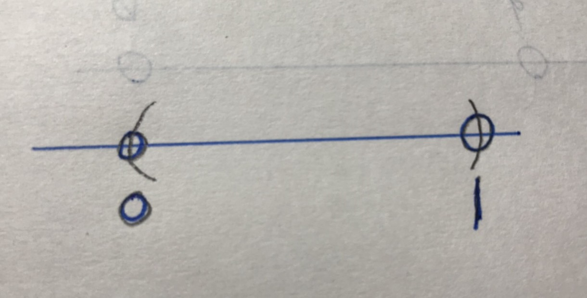
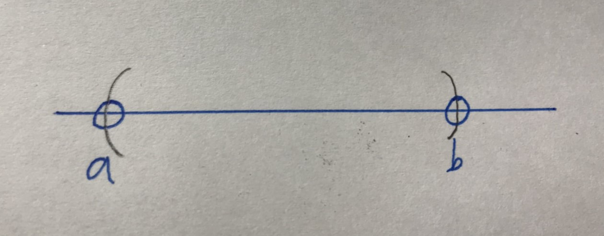
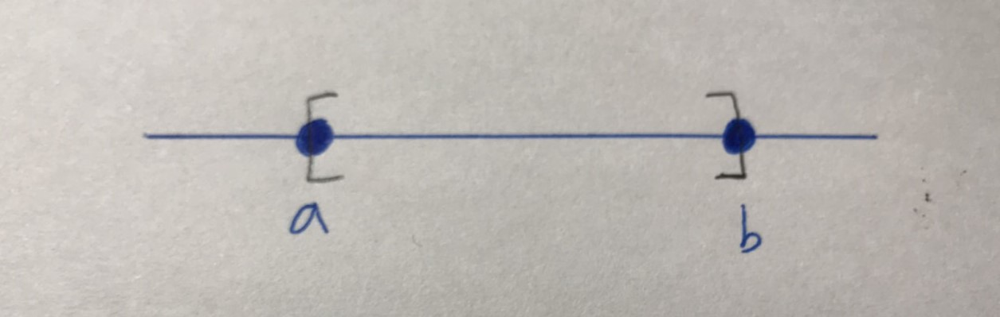
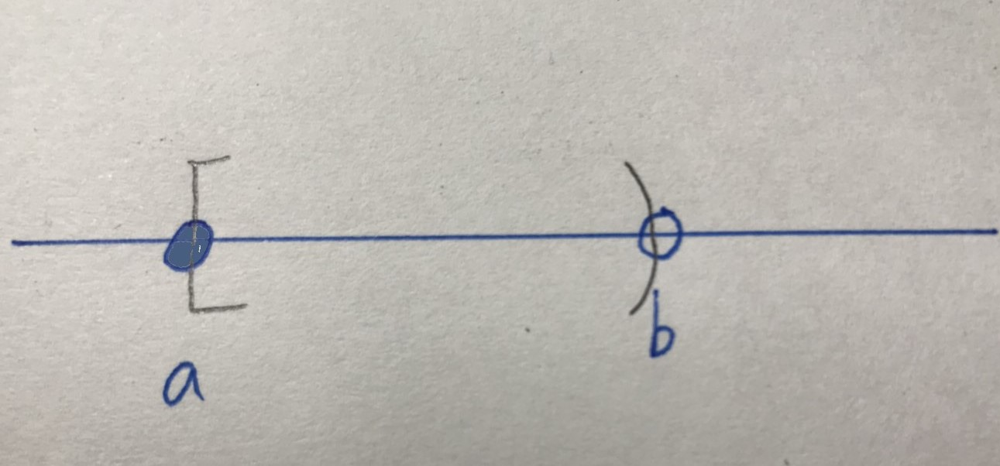
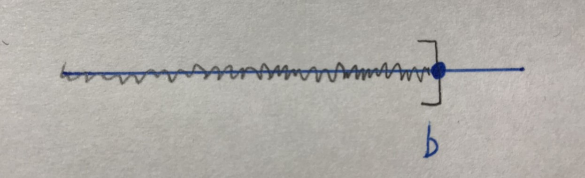
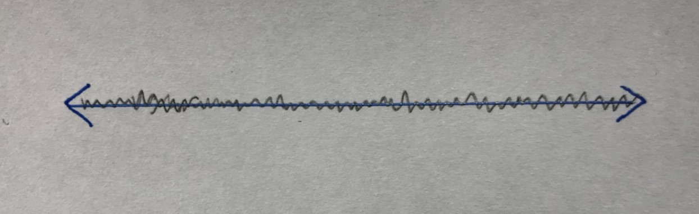

微積分筆記2
Intervals 區間
Def1: A subset of the real line is called an unterval if it
contains at least two numbers and contains all real numbers lying between any two of its elements.
Type of intervals:
(0,1)={x∈ℝ:0< x< 1} (open)

(a,b)={x∈ℝ:a< x< b} (open)

[a,b]={x∈ℝ:a≤ x≤ b} (closed)

[a,b)={x∈ℝ:a< x≤ b} (half-open)

(a,∞)={x∈ℝ:x> a} (open)

(∞,b]={x∈ℝ:b≤ x} (closed)

(∞,∞)=ℝ={x∈ℝ:-∞<x< ∞} (Both open and closed)

Theory of the Real Numbers(實數的定理)
A:addition properties(加法性質)
A1:a+(b+c)=(a+b)+c for all a,b,c
A2:a+b=b+a for all a,b
A3:There is a number called "0" such that a+0=a for all a.
A4:For each number a,there is a such that a+b=0
M: multiplication properties(乘法性質)
M1:a(bc)=(ab)
M2:ab=ba for all a,b
M3:There is a number called "1" such that a*1=a for all a
M4:For each nonzero a,there is a b such that ab=1
Distributive分配律
D(Distributive分配律):a(b+c)=ab+ac for all a,b,c
O:order properties(比較性質)
O1:For any a and b,either a≤b or b≤a or both
O2:If a≤b and b≤a then a=b
O3:If a≤b and b≤c then a≤c
O4:If a≤b then a+c≤b+c
O5:If a≤b and 0≤c then ac≤bc
ex1: 6⁄(x-1)≥ 5
(x > 1 ,從x < 1會變號 ,x=1沒有定義)
⇒ (byO5) 6≥ 5(x-1)=5x-5
⇒ (byO5) 11⁄5 ≥ x
∴ interval:(-∞,11⁄5)⋂(1,∞)=(1,11⁄5)
Absolute Value(絕對值)
Def2: ∣a∣=a,if a ≥ 0 ∣a∣=-a,if a ≤ 0
1)∣a∣≥ 0 ∀a
2)∣-a∣=∣a∣≥ ∀a
3)∣a∣=0 ⇔ a=0
4)√a2=∣a∣
Thm1:
1)∣ab∣=∣a∣∣b∣
2)∣a⁄b∣=∣a∣⁄∣b∣
3)∣a∣ ≤ M ⇔ -M≤a≤M
4)∣a∣ ≤ M ≤ 0 ⇔ a≤M or a≥M
待補
回到標題